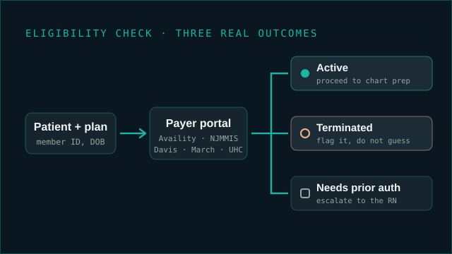

Eligibility and benefits verification across Medicare, Medicaid and vision plans, in Availity, NJMMIS, UnitedHealthcare, Davis Vision and March Vision. Issues that need clinical or managerial review get flagged rather than decided outside my role. Illustration of the process. No patient data shown.